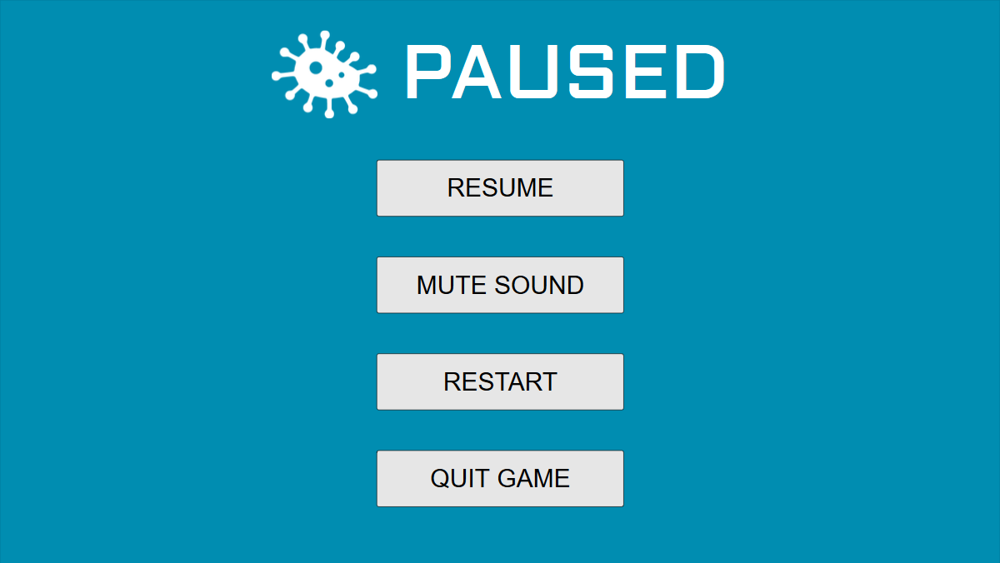

This document describes our current working idea for our game, “Quarantine,” designed to raise awareness of methods that we may employ to prevent and contain outbreaks of deadly diseases. Our game will mostly employ the use of tiled backgrounds and memory management, as the focus is largely on the strategy the players employ to win the game.
Quarantine will be developed for web browser using the Phaser game engine, which is a free 2D game framework for making HTML5 games for desktop and mobile. Audacity will be used to compile the sound effects and music. A mix of Photoshop and MS Paint will be used to create the graphics of the game.
Your city is the epicenter of the new disease, and more people seem to be catching it every day. The government is in panic, and you have recently been hired as the leader of the Pandemic Response Team of your fair city. It is your responsibility to quell the disease, make sure the population’s morale stays up, and work towards researching a cure. Can you eradicate the disease in time before the whole city gets infected?
The player’s task is to manage the spread of a pandemic throughout the city and prevent it from infecting/killing everyone. The disease spreads based on multiple variables, such as infectivity, lethality, and severity. In order to quell the disease, the player can take a variety of actions, such as spreading public safety announcements, quarantining certain parts of the city, and more. The player has access to a limited amount of actions each day.
Additionally, each section of the city has a different morale based on the population, which will be influenced by the player’s actions and how they handle the pandemic. If the morale of the citizens falls below a certain point, the people will riot, and the pandemic will spread even further. The player can help boost morale by taking other actions, such as spreading propaganda or educating people on the disease. However, these actions will cut into the time it takes to cure the disease. The player must balance the management of the population’s morale and the management of the disease.
Quarantine is a turn-based strategy game that has the player fighting against the spread of a disease. The core gameplay of Quarantine is simple--the player spends their turn taking actions and strategizing about how to best contain the infection. After the player’s turn ends, the computer simulates the result of the player’s actions--for example, how the virus might spread or how morale would increase or decrease based on the actions taken. The incorporation of controlled RNG will force the player to adapt their strategy from game to game as well as making sure that the challenge isn’t too frustrating for them.
While trying to quell the disease, the player must balance two stats--morale and threat level. Morale keeps track of the overall demeanor of the population and how they feel about the pandemic--the lower the morale, the more likely they are to revolt. Morale decays slowly over time, and its decay is accelerated by other factors, such as the rate of infection or death. Threat level is calculated via a variety of factors, but mostly concerns the amount of infected and the rate at which people are infected. The player will lose if morale reaches 0%, if everyone in the population dies, or if the threat level reaches 100%. The player wins once a cure is found and the recovery rate exceeds the infectivity rate.
Depending on the difficulty of the game, the virus has several variables that keep track of its infectivity, severity, fatality, and recovery. Infectivity affects how fast the disease spreads to other people. Severity affects morale as well as the spread of disease. Fatality affects the amount of people who die each day, as well as indirectly affecting morale. Recovery is a separate variable that helps calculate how many people recover from the virus each day. These variables can change based on the player’s choices as special random events in the game.
The game will use a tiled map system in order to simulate the population. Each tile will have a certain morale, population, and vulnerability. More vulnerable tiles, such as those further away from a hospital or high traffic areas (transportation tiles), will be more rapidly infected by the disease. The more infected a tile is, the more likely the disease will spread to adjacent tiles.
When the player starts a game, the disease will have taken root in some random tile on the map, with more vulnerable tiles being prioritized for the virus to spawn. The player has a set of actions that they can take each day, with each action taking a variable amount of energy. For example, setting up a temporary health clinic in a district would take 4 energy, while distributing information pamphlets or propaganda would take 1 energy. The player has a limited pool of energy to draw upon, and thus must decide which actions would be most beneficial. Certain actions would also allow the player to interact with the map--as with the above example, the player could select the “create health clinic” action and click a map tile to place the health clinic. In order to prevent the player from spamming a certain action, more costly actions would have a cooldown period.
The actions the player takes can have an effect on the spread of the pandemic as well as the morale of the population. Below is a list of examples of what the player can affect with their actions. Generally, the more impactful an action is, the more costly it is for the player to use.
After the player has selected the actions they wish to take and ended their turn, the game begins its turn. The computer’s turn can be broken down into several steps.
Occasionally, the player might randomly have a special event occur. These special events could either be beneficial (cure research progress boosted, receive a large donation that allows you to take one extra action that day) or harmful (an outbreak occurs in a random tile, the people begin to organize and go against your will, cure research slowed). In order to prevent the player from receiving several bad events in a row that could ruin their fun, a counter will be used to give the player a minimum amount of turns before the computer tries to pick a random event. For example, let us say that the player receives a bad event on turn 10. The computer would then wait 5 turns before checking if another event should be generated. With each turn after that, the chance of receiving a random event increases until the computer confirms the generation of a new event, in which the event countdown and chance of getting a new event is reset.
In order to win the game, the player must buy enough time for the cure to be completed before any of the losing conditions take place. At easy/normal/hard difficulty, the cure progresses approximately 4%/3%/2% each day, taking approximately 25/34/50 days for a cure to be found. Different events and effects can cause the cure progress to be slowed or sped up. For example, an increase in research staff would increase the cure progress, while an increase in infection or decrease in morale would cause progress to slow. Therefore, throughout the game, the player must continue to focus on boosting cure research to avoid it slowing down to a crawl, while still managing all other aspects of the game. After the cure is found, the player must distribute the cure, changing the rate of recovery to be greater than the rate of infectivity. Once these two conditions are met, the player wins the game and their grueling battle against the virus.
If time permits us to implement this, the game will also implement a turn timer that affects how much time a player has to make their decisions. As time goes on, the player will have less and less time to make their decisions, replicating the panic associated with the pandemic.
The game will be played with a keyboard and mouse.
Menus:The Graphical User Interface will consist of:
All artwork in the game will be original. The following needs to be created:
All sound effects will be original or royalty free. Although there are not that many sound effects necessary for a game like this, we will need sound effects for the following:
The game music will be royalty-free music reminiscent of John Carpenter music--heavily synthesized and bass-heavy to build up the tension and serious tone of the game. An example of the tone we will be striving for is the following track:
https://benprunty.bandcamp.com/track/goblins-and-ghouls-division